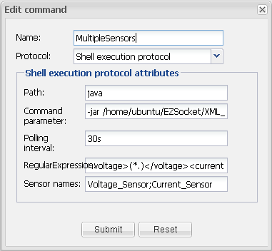

|
This page last changed on Sep 07, 2012 by mstsai.
In my project, I am using a meter as a sensor. The meter returns all information in a single packet.
When I created three sensors to read different parts from the return packet, I saw three requests to the meter. This create too much traffic.
Is there anyway that I could just do a single request and obtain different parts from the return packet?
|
What protocol are you using to request information from the meter ?

Posted by ebariaux at Sep 07, 2012 09:08
|
|
I am using web service through http. The return is in xml format. In my early post, I had problems extracting the information in JSON format. I have changed to XML which works well.
I think this issue has been discussed in the past, http://www.openremote.org/display/forums/Velleman+K8055+Experiment+USB+board?focusedCommentId=19440410#comment-19440410
Following this discussion, I tried to create a command with "Shell execution protocol" and assign values to different fields for one sensor as:
Path: java
command parameter: -jar /home/ubuntu/EZSocket/XML_Sender.jar
Regular Expression: <voltage>(.*)</voltage>
Sensor names: voltage_shell
And created a label with voltage_shell as the sensor.
Reloading the webconsole, I got "Some component IDs are invalid and some sensor will not work".
The command runs on the shell and the outputs are as below:
ubuntu@HEMS132:~$ java -jar /home/ubuntu/EZSocket/XML_Sender.jar
<?xml version="1.0" encoding="UTF-8" standalone="no"?><measurement><response>ok</response><id>1</id><voltage>112.91</voltage><current>0.0</current><frequency>59.98</frequency><power_factor>1.0</power_factor><active_power>0.0</active_power><apparent_power>0.0</apparent_power><main_energy>3.32</main_energy><retry>18</retry><status>off</status><sourcePort>192.168.0.132:38120</sourcePort><time>2012-09-09 12:22:49</time></measurement>
ubuntu@HEMS132:~$
Any suggestion ?
Posted by mstsai at Sep 07, 2012 10:33
|
|
Can you try executing the command directly on the controller's HTTP interface:
'controller/rest/status/{sensor_id}' where sensor_id is the sensor id you've bound the shellexe command to?
And see if there are any errors in the console or logs related to this? Or log something from your XML_Sender.jar that indicates the java code is executed as intended?
Posted by juha at Sep 13, 2012 14:45
|
|
Thanks for the instructions.
The settings of ShellExec are:

When I 'sync with online designer', I saw following messages:
INFO 2012-09-15 00:34:00,728 : No rule definitions found in '/home/ubuntu/OpenRemote-Controller-2.0.0/webapps/controller/rules'.
INFO 2012-09-15 00:34:00,731 : Initialized event processor : Drools Rule Engine
ERROR 2012-09-15 00:34:01,375 : Creating sensor failed. Error : The included command reference in a sensor (ID = 185) is not an event producer (Command id : 185, Type : 173)
XML Element : <sensor xmlns="http://www.openremote.org" id="185" name="Voltage_Sensor" type="custom">
<include type="command" ref="173" />
</sensor>
org.openremote.controller.exception.XMLParsingException: The included command reference in a sensor (ID = 185) is not an event producer (Command id : 185, Type : 173)
at org.openremote.controller.model.xml.Version20SensorBuilder.parseSensorEventProducer(Version20SensorBuilder.java:428)
at org.openremote.controller.model.xml.Version20SensorBuilder.build(Version20SensorBuilder.java:286)
at org.openremote.controller.deployer.Version20ModelBuilder.buildSensorObjectModelFromXML(Version20ModelBuilder.java:773)
at org.openremote.controller.deployer.Version20ModelBuilder.buildSensorModel(Version20ModelBuilder.java:619)
at org.openremote.controller.deployer.Version20ModelBuilder.build(Version20ModelBuilder.java:537)
at org.openremote.controller.deployer.AbstractModelBuilder.buildModel(AbstractModelBuilder.java:148)
at org.openremote.controller.service.Deployer.startup(Deployer.java:760)
at org.openremote.controller.service.Deployer.softRestart(Deployer.java:373)
at org.openremote.controller.service.Deployer$ControllerDefinitionWatch.run(Deployer.java:1188)
at java.lang.Thread.run(Thread.java:679)
ERROR Controller Definition File Watcher for Default Deployer: Creating sensor failed. Error : The included command reference in a sensor (ID = 185) is not an event producer (Command id : 185, Type : 173)
XML Element : <sensor xmlns="http://www.openremote.org" id="185" name="Voltage_Sensor" type="custom">
<include type="command" ref="173" />
</sensor>
org.openremote.controller.exception.XMLParsingException: The included command reference in a sensor (ID = 185) is not an event producer (Command id : 185, Type : 173)
at org.openremote.controller.model.xml.Version20SensorBuilder.parseSensorEventProducer(Version20SensorBuilder.java:428)
at org.openremote.controller.model.xml.Version20SensorBuilder.build(Version20SensorBuilder.java:286)
at org.openremote.controller.deployer.Version20ModelBuilder.buildSensorObjectModelFromXML(Version20ModelBuilder.java:773)
at org.openremote.controller.deployer.Version20ModelBuilder.buildSensorModel(Version20ModelBuilder.java:619)
at org.openremote.controller.deployer.Version20ModelBuilder.build(Version20ModelBuilder.java:537)
at org.openremote.controller.deployer.AbstractModelBuilder.buildModel(AbstractModelBuilder.java:148)
at org.openremote.controller.service.Deployer.startup(Deployer.java:760)
at org.openremote.controller.service.Deployer.softRestart(Deployer.java:373)
at org.openremote.controller.service.Deployer$ControllerDefinitionWatch.run(Deployer.java:1188)
at java.lang.Thread.run(Thread.java:679)
INFO 2012-09-15 00:34:02,097 : Registered sensor : Switch Sensor (Name = 'SW_STATUS', ID = '186')
INFO 2012-09-15 00:34:02,115 : Registered sensor : Sensor (Name = 'Voltage_Sensor_Label', ID = '187', State Mappings: {})
INFO 2012-09-15 00:34:02,136 : Registered sensor : Sensor (Name = 'VOLTAGE_02', ID = '184', State Mappings: {})
INFO 2012-09-15 00:34:02,158 : Registered sensor : Sensor (Name = 'DisplayDate Sensor', ID = '190', State Mappings: {})
INFO 2012-09-15 00:34:02,214 : Registered sensor : Sensor (Name = 'ENERGY_02', ID = '188', State Mappings: {})
INFO 2012-09-15 00:34:02,338 : Registered sensor : Sensor (Name = 'POWER_02', ID = '189', State Mappings: {})
INFO 2012-09-15 00:34:02,347 : Registered sensor : Switch Sensor (Name = 'SW2_STATUS', ID = '182')
INFO 2012-09-15 00:34:02,424 : Registered sensor : Sensor (Name = 'Energy_Sensor_Label', ID = '183', State Mappings: {})
INFO 2012-09-15 00:34:02,500 : Registered sensor : Sensor (Name = 'RealPower_Sensor_Label', ID = '181', State Mappings: {})
INFO 2012-09-15 00:34:03,036 : Startup complete.
ERROR HTTP\-Thread\-36: Requested sensor id '185' was not found. Defaulting to 'N/A'.
ERROR HTTP\-Thread\-50: CommandException occurs
org.openremote.controller.exception.NoSuchComponentException: No such component in status cache : 185
at org.openremote.controller.statuscache.StatusCache.queryStatus(StatusCache.java:306)
at org.openremote.controller.service.impl.StatusCommandServiceImpl.readFromCache(StatusCommandServiceImpl.java:72)
at org.openremote.controller.rest.StatusCommandRESTServlet.handleRequest(StatusCommandRESTServlet.java:63)
at org.openremote.controller.rest.RESTAPI.doPost(RESTAPI.java:125)
at org.openremote.controller.rest.RESTAPI.doGet(RESTAPI.java:81)
at javax.servlet.http.HttpServlet.service(HttpServlet.java:617)
at javax.servlet.http.HttpServlet.service(HttpServlet.java:717)
at org.apache.catalina.core.ApplicationFilterChain.internalDoFilter(ApplicationFilterChain.java:290)
at org.apache.catalina.core.ApplicationFilterChain.doFilter(ApplicationFilterChain.java:206)
at org.openremote.controller.rest.support.json.JSONCallbackFilter.doFilter(JSONCallbackFilter.java:58)
at org.apache.catalina.core.ApplicationFilterChain.internalDoFilter(ApplicationFilterChain.java:235)
at org.apache.catalina.core.ApplicationFilterChain.doFilter(ApplicationFilterChain.java:206)
at org.springframework.web.filter.CharacterEncodingFilter.doFilterInternal(CharacterEncodingFilter.java:78)
at org.springframework.web.filter.OncePerRequestFilter.doFilter(OncePerRequestFilter.java:77)
at org.apache.catalina.core.ApplicationFilterChain.internalDoFilter(ApplicationFilterChain.java:235)
at org.apache.catalina.core.ApplicationFilterChain.doFilter(ApplicationFilterChain.java:206)
at org.apache.catalina.core.StandardWrapperValve.invoke(StandardWrapperValve.java:233)
at org.apache.catalina.core.StandardContextValve.invoke(StandardContextValve.java:191)
at org.apache.catalina.core.StandardHostValve.invoke(StandardHostValve.java:128)
at org.apache.catalina.valves.ErrorReportValve.invoke(ErrorReportValve.java:102)
at org.apache.catalina.core.StandardEngineValve.invoke(StandardEngineValve.java:109)
at org.apache.catalina.connector.CoyoteAdapter.service(CoyoteAdapter.java:286)
at org.apache.coyote.http11.Http11Processor.process(Http11Processor.java:845)
at org.apache.coyote.http11.Http11Protocol$Http11ConnectionHandler.process(Http11Protocol.java:583)
at org.apache.tomcat.util.net.JIoEndpoint$SocketProcessor.run(JIoEndpoint.java:354)
at java.util.concurrent.ThreadPoolExecutor.runWorker(ThreadPoolExecutor.java:1110)
at java.util.concurrent.ThreadPoolExecutor$Worker.run(ThreadPoolExecutor.java:603)
at java.lang.Thread.run(Thread.java:679)
ERROR HTTP\-Thread\-50: Requested sensor id '185' was not found. Defaulting to 'N/A'.
ERROR HTTP\-Thread\-50: Requested sensor id '185' was not found. Defaulting to 'N/A'.
ERROR HTTP\-Thread\-50: Requested sensor id '185' was not found. Defaulting to 'N/A'.
ERROR HTTP\-Thread\-50: Requested sensor id '185' was not found. Defaulting to 'N/A'.
Execution of http://localhost:8800/controller/rest/status/Voltage_Sensor returns following messages:
ERROR HTTP\-Thread\-53: Error in handling REST API response:
java.lang.NullPointerException:
at org.openremote.controller.service.impl.StatusCommandServiceImpl.readF
romCache(StatusCommandServiceImpl.java:76)
at org.openremote.controller.rest.StatusCommandRESTServlet.handleRequest
(StatusCommandRESTServlet.java:63)
at org.openremote.controller.rest.RESTAPI.doPost(RESTAPI.java:125)
at org.openremote.controller.rest.RESTAPI.doGet(RESTAPI.java:81)
at javax.servlet.http.HttpServlet.service(HttpServlet.java:617)
at javax.servlet.http.HttpServlet.service(HttpServlet.java:717)
at org.apache.catalina.core.ApplicationFilterChain.internalDoFilter(Appl
icationFilterChain.java:290)
at org.apache.catalina.core.ApplicationFilterChain.doFilter(ApplicationF
ilterChain.java:206)
at org.openremote.controller.rest.support.json.JSONCallbackFilter.doFilter(JSONCallbackFilter.java:63)
at org.apache.catalina.core.ApplicationFilterChain.internalDoFilter(ApplicationFilterChain.java:235)
at org.apache.catalina.core.ApplicationFilterChain.doFilter(ApplicationFilterChain.java:206)
at org.springframework.web.filter.CharacterEncodingFilter.doFilterInternal(CharacterEncodingFilter.java:78)
at org.springframework.web.filter.OncePerRequestFilter.doFilter(OncePerRequestFilter.java:77)
at org.apache.catalina.core.ApplicationFilterChain.internalDoFilter(ApplicationFilterChain.java:235)
at org.apache.catalina.core.ApplicationFilterChain.doFilter(ApplicationFilterChain.java:206)
at org.apache.catalina.core.StandardWrapperValve.invoke(StandardWrapperValve.java:233)
at org.apache.catalina.core.StandardContextValve.invoke(StandardContextValve.java:191)
at org.apache.catalina.core.StandardHostValve.invoke(StandardHostValve.java:128)
at org.apache.catalina.valves.ErrorReportValve.invoke(ErrorReportValve.java:102)
at org.apache.catalina.core.StandardEngineValve.invoke(StandardEngineValve.java:109)
at org.apache.catalina.connector.CoyoteAdapter.service(CoyoteAdapter.java:286)
at org.apache.coyote.http11.Http11Processor.process(Http11Processor.java:845)
at org.apache.coyote.http11.Http11Protocol$Http11ConnectionHandler.process(Http11Protocol.java:583)
at org.apache.tomcat.util.net.JIoEndpoint$SocketProcessor.run(JIoEndpoint.java:354)
at java.util.concurrent.ThreadPoolExecutor.runWorker(ThreadPoolExecutor.java:1110)
at java.util.concurrent.ThreadPoolExecutor$Worker.run(ThreadPoolExecutor.java:603)
at java.lang.Thread.run(Thread.java:679)
ERROR HTTP\-Thread\-60: Requested sensor id '185' was not found. Defaulting to 'N/A'.
ERROR HTTP\-Thread\-55: Requested sensor id '185' was not found. Defaulting to 'N/A'.
The code was never executed.
Posted by mstsai at Sep 14, 2012 17:14
|
|
You have to use controller_2.0.1 otherwise the shellexe protocol does not include the eventlistener stuff.
Look here: http://www.redeker-consulting.de/openremote/OpenRemote-Controller-2.0.1.zip
Posted by mredeker at Sep 14, 2012 21:03
|
|
Thanks. That solves the problems. Now I am able to get the readings in one transaction.
Posted by mstsai at Sep 15, 2012 17:19
|
|
{kind=link}
{kind=link}